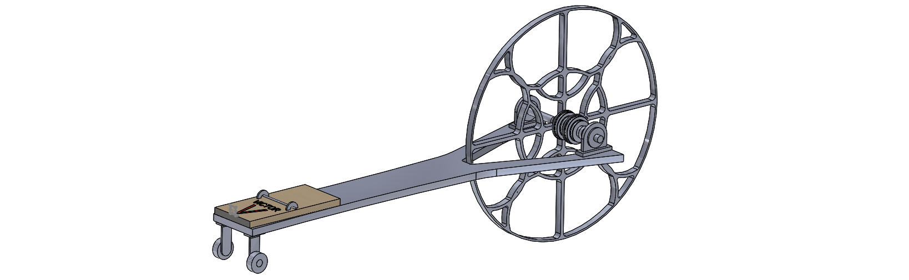
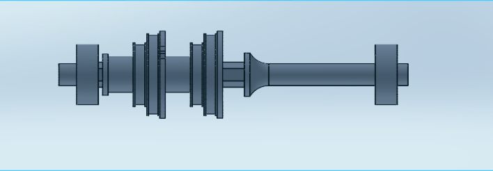

24-101 Final Project: Mousetrap Car
Project Description
The goal of this project was to create a mousetrap car that could travel 18 feet forward and then reverse back to the start. The car that traveled the distance in the least amount of time would be the winner of the competition. There would be two design reviews, with the last one determining your overall performance score.
Teammates
Design Highlights
 The most important aspect of our design was the custom axle. One of the challenges with this project was creating a vehicle that could both cover at least 36 feet of distance, but also be able to do it quickly. With this as a goal, we designed a variable width axle. This axle was comprised of a 1/4 inch dowel fitted with 3D printed steps.
This axle was designed to allow for fast acceleration, yet have high speed as well as allow for distance. This was achieved by starting the string on the largest diameter step, then after one rotaion would step down to the next, so on and so on until it was on the smallest step. This allowed our vehicle to accelerate at a faster rate than comparably sized mousetrap cars. This step down process occurred two times each trial, once at the start, and again when the vehicle changed direction and started heading back to the start.
 Another important design feature were the drive wheels themselves.
Not only did we want them to be aesthetically pleasing, but we also
wanted to limit the inertia in the wheels. By limiting this inertia, we
would be able to convert more of our moustrap energy into linear
velocity. With these criteria in mind, we designed the drive wheels
to have most of the material within the wheel cut out using laser
cutters. What material we did keep, most of it is concentrated
towards the center, such that most of the mass is close to the
center of the wheel.
Another important design feature were the drive wheels themselves.
Not only did we want them to be aesthetically pleasing, but we also
wanted to limit the inertia in the wheels. By limiting this inertia, we
would be able to convert more of our moustrap energy into linear
velocity. With these criteria in mind, we designed the drive wheels
to have most of the material within the wheel cut out using laser
cutters. What material we did keep, most of it is concentrated
towards the center, such that most of the mass is close to the
center of the wheel.
Another decision was in relation to the front wheels, or lack there of. With the front wheels not driving, the diameter was not a constraint. With this, we decided that we could use the bearings themselves as our front wheels. This would allow for a very low friction wheel that had a very small amount ofinetia.
Finally, the vehicle was designed such that everything but the variable axle was able to be laser cutted. This allowed us to have a lightweight that was easily repeatable. This manufacturing process allowed for our axles to be parralel which limied the twurning that we would expirence in our testing.
Final Version
We decided to switch to a double drive wheel system as the wheel base was not wide eonugh and the vehicle was very unstable. We also decided to make the smallest part of the drive axle 1/8 inches in diameter.
With these changes, we were able to improve on our original time of 11.8 seconds by over 2 seconds. Our best time was 9.3 seconds which was in the top 5 of groups.